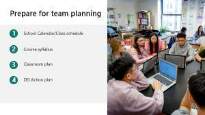

Workplace learning · 2023Microsoft TEALS / Articulate Storyline
Preparing teachers to lead with confidence.
An interactive, self-paced orientation that helps classroom teachers understand their role, coordinate with volunteers, and prepare for a successful year.
Explore the case study